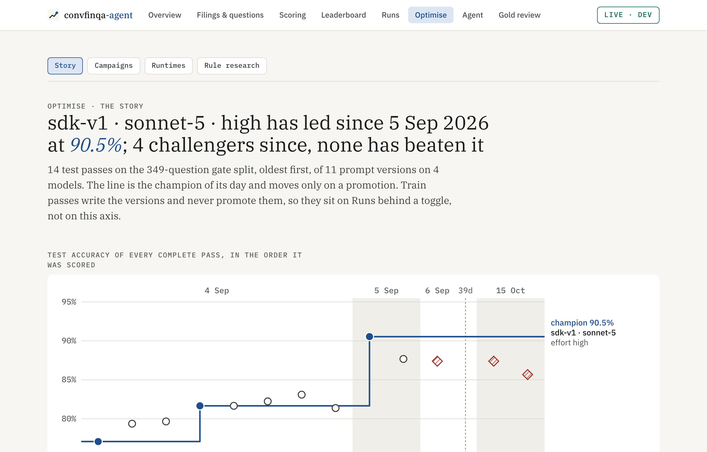
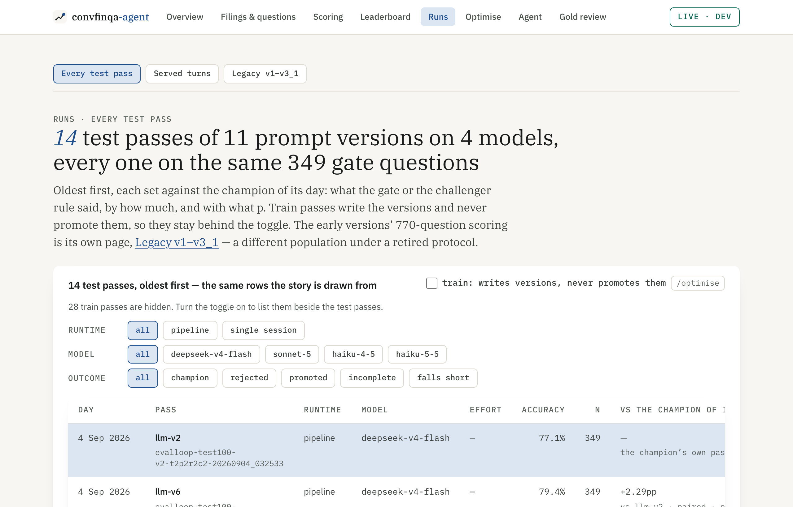
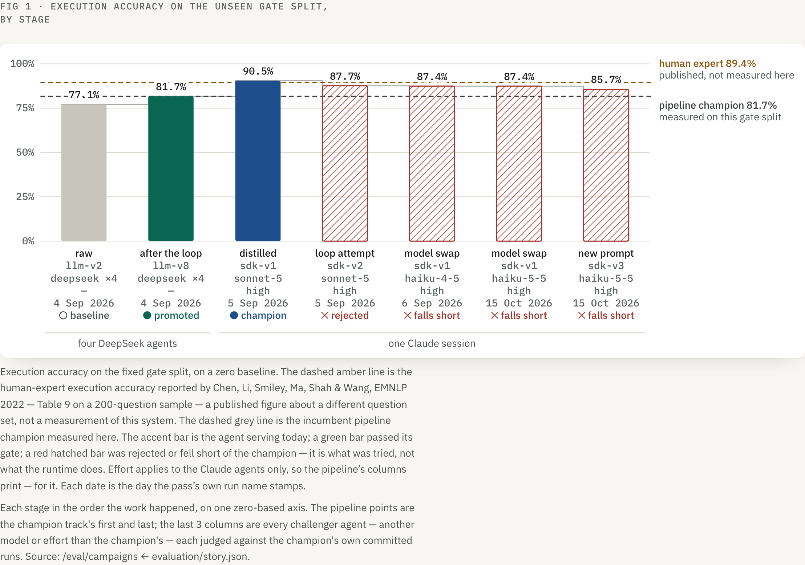

optimsation · 2026-10-15 · results of the s21 plan · built, one cycle run · verdict falls short · champion unchanged · nothing committedThe whole story is on screen now, and the loop's first Haiku rewrite made Haiku worse
Part A: Optimise opens on a Story tab that draws every test pass of every agent against the champion of its day,
and Runs opens on the same ledger. Part B: the loop can now optimise a challenger on its own model without ever re-running the champion.
Part C: one cycle (h01-e01) diagnosed Haiku 5.5's 76 train failures, wrote sdk_v3 for Haiku,
and scored it: 85.67% on test, below both the champion (90.54%) and the prompt it replaced (87.39% on Haiku).
The s19 rule said falls short on every check; the registry was not touched.
One chart, test passes only, every agent ever scored
The step line is the champion of its day, and it moves only on a promotion: v2 → v8 (+4.58pp, c01-e03) → sdk_v1 on Sonnet 5 (+8.88pp over v8).
Each step is anchored at the test pass that measured it, not at the promotion's timestamp. Every rejected or failing challenger sits off the line,
including Haiku 4.5, which was on no chart before, and today's sdk_v3. The rate-limited 44.4% pass from 5 Sep is in the ledger
with its reason and kept off the axis.



The live bug is fixed. Runtimes §5 showed sdk_v1 at 87.39% (a Haiku pass) beside the +8.88pp its Sonnet pass measured. sdk experiment rows now take both accuracies from their gates-ledger row, and a version's accuracy is its pass on the champion's agent only. It now reads 81.66% → 90.54%.
Haiku's 76 failures, ranked on Haiku alone, became two edits
Cycle 1 reused the two committed Haiku draws (seeds 2027 and 2028), so no new train pass was needed. The Opus 5 teacher diagnosed every first-wrong turn. The diagnoser's memory held no Sonnet hints (the 56 Sonnet sdk_v1 rows now pool apart), and refusals were ranked as one class.
| rank | failure class (Haiku 5.5 · high, sdk_v1) | faults | Wilson lower | edited? |
|---|---|---|---|---|
| 1 | preprocess/wrong-operation | 12 / 47 | 15.3% | §4 Preprocess |
| 2 | new:declined-available-value (gave up) | 11 / 47 | 13.6% | §5 Retrieve |
| 3 | preprocess/wrong-output-format | 7 / 47 | 7.4% | no |
| 4 | calculator/wrong-format | 5 / 47 | 4.6% | no (a past edit worsened it) |
| 5–8 | misresolved reference, wrong scale, collapsed skeleton, wrong value | 9 / 47 | ≤ 2.2% | no |
Bind subtraction operands in the order the question names them; take the change in a rate as a plain difference; make rescaling an explicit power-of-ten step; let an elliptical "what about X to Y" inherit the first turn's operation.
Never answer "unavailable" for a value the history already gave. A located candidate may not be rejected on a near miss (an accounting synonym, a near-identical period label, an unstated scope qualifier, a dropped row label or duplicate headers).
The writer was told it was writing for claude-haiku-5-5 · high, and saw sdk_v2's Sonnet rejection labelled as Sonnet. sdk_v3 registered as s3 with parent s1, not s2.
Worse than the prompt it replaced, on test and on its own train draws
| test100 · 349 questions | accuracy | program turns | number turns | "unavailable" | ceiling errors | cost |
|---|---|---|---|---|---|---|
| champion · sdk_v1 · Sonnet 5 · high | 90.54% | 88.24% | 95.50% | 0 | 0 | $11.83 |
| sdk_v1 · Haiku 5.5 · high (s19) | 87.39% | 82.35% | 98.20% | 8 | 1 | $0.73 |
| sdk_v3 · Haiku 5.5 · high (h01-e01) | 85.67% | 81.09% | 95.50% | 8 | 1 | $0.76 |
| paired, question by question | Δ | 95% CI | fixed | broken | program turns | number turns |
|---|---|---|---|---|---|---|
| sdk_v3 Haiku vs the champion | −4.87pp | [−9.20, −0.88] | 7 | 24 | −7.14pp (3 fixed / 20 broken) | 0.00pp (4 / 4) |
| sdk_v3 Haiku vs sdk_v1 Haiku | −1.72pp | [−4.09, 0.00] | 0 | 6 | −1.26pp (0 / 3) | −2.70pp (0 / 3) |
| train, early-stopped, per conversation | seed 2027 | seed 2028 | pooled of 200 | "unavailable" |
|---|---|---|---|---|
| champion · Sonnet | 64 | 68 | 132 | — |
| sdk_v1 · Haiku | 63 | 61 | 124 | 20 |
| sdk_v3 · Haiku | 60 | 58 | 118 | 14 |
Train is in-sample: these are the draws the rewrite was written from. Against sdk_v1 on Haiku, sdk_v3 finished 4 more conversations and lost 10. Against the champion: 10 finished, 24 lost, p toward worse 0.012, so train vetoes on its own.
Refusals moved a little; the targeted class barely moved, and the new rules broke turns that worked
| diagnosed first-wrong train turns, by class | cases | now right |
|---|---|---|
gave up (new:declined-available-value) | 20 | 5 |
preprocess/wrong-operation (the top target) | 14 | 1 |
preprocess/wrong-output-format | 9 | 1 |
retriever/wrong-period | 8 | 1 |
calculator/wrong-format | 5 | 1 |
| everything else | 20 | 1 |
| all | 76 | 10 |
| the 6 test questions sdk_v3 broke (right on sdk_v1 · Haiku) | gold | sdk_v1 → sdk_v3 | cause |
|---|---|---|---|
| Single_MAS/2018 q0 | 21 | 21% → −21% | the new operand-order rule flipped the subtraction |
| Single_MAS/2018 q2 | 75% | 0.75 → −0.75 | |
| Double_ETR/2008 q0, q1, q3 | 2169720 · 125700 · 632100 | right → an executive's name | number turns planned as chains of greater() comparisons |
| Double_MRO/2008 q2 | 42.4% | right → not attempted | the token ceiling (62,109 > 60,000): the first-batch effect moved from IPG to MRO |
On test, 44 answers differ between the two Haiku passes, and not one of them flipped from wrong to right.
Falls short on every check of the rule you chose (D1)
- nobeats: Δ −4.87pp, one-sided cluster p toward better 0.989
- noCI within the 3pp margin: lower bound −9.20pp vs −3.0pp
- notest not worse: p toward worse 0.011
- noprogram turns not worse: p toward worse 0.0015
- notrain not worse: 132 → 118 of 200 conversations, p toward worse 0.012 (train vetoes)
- nono extra ceiling errors: 0 → 1
The gate row in gates.jsonl says what happened: promoted=false, gate_passed=false, verdict_rule=model_swap,
verdict_outcome=falls_short, and both agents named. champion_agent is unchanged: sdk_v1 · claude-sonnet-5 · high, floor 90.54%.
The cycle took about 35 minutes on the subscription: diagnosis $14.02, the rewrite $0.73, four Haiku passes $2.09 (API-equivalent, ≈ $16.84 in all).
Everything in the plan, verified, nothing committed
- B1, B5, smoke, D3:
cycle --sdk-model --sdk-effort --train-csv --rescore-seed --diagnose-concurrency --smoke-reports. A challenger cycle reuses the champion'sevidence_runand never runs it; a stand-in CSV or another agent's draw is refused. On the champion's own agent the evidence run is reused too. - B2, B3: gate rows are written after the promotion attempt, with
gate_passed,verdict_ruleandverdict_outcome; diagnoses and rewrites carry the agent. Older rows read as Sonnet 5 · high (ledgers.LEGACY_SDK_AGENT). Campaign streaks readgate_passed. - B4, B6, B7: pooling and the diagnoser's memory are per agent; the writer is told its target; refusals rank as one stable class without touching
TEACHER_PROMPT. - B8–B11:
ensure_sdk(parent_version=…);story.challenger_pair/challenger_comparisonandsdk_gate.gate_challenger;registry.promote_challenger(prompt + model + effort, floored on its own pass);gate-targeted --campaign --label --rewrite-id; and a newgate-challengercommand for finishing a rate-limited cycle by hand. - A1, A2:
story.test_timeline,champion_steps,train_passesandchallengers, served by/eval/campaigns. The by-version bug is fixed. Carried campaigns merge per name, so h01 landing didn't drop c01–c03 or s01./eval/loop-runsnow lists sdk runs. - A3–A5: Optimise › Story (Campaigns at /optimise/campaigns), Runs › Every test pass (Legacy at /runs/legacy), Runtimes Fig 1 with every agent, and the Overview's "the record" with a compact chart. Every old address still redirects.
- A6 and checks: pytest 473 passed (446 before); ruff, format and mypy clean; vitest 230 passed;
npm run lintclean; Playwright story and landing 11 passed against the 14-pass record;story_checkcurrent, and it now fails a page that hides the timeline; the CI gate passes (champion 90.54%, floor 90.04%).
Not done: no Playwright spec for /optimise/runtimes or /optimise/campaigns (screenshots only). Pipeline passes show cost "—", because they never recorded one. Two workers built the frontend in parallel; one briefly ran the default prettier, which leaves about 15–20 lines of style churn in three Runtimes files.